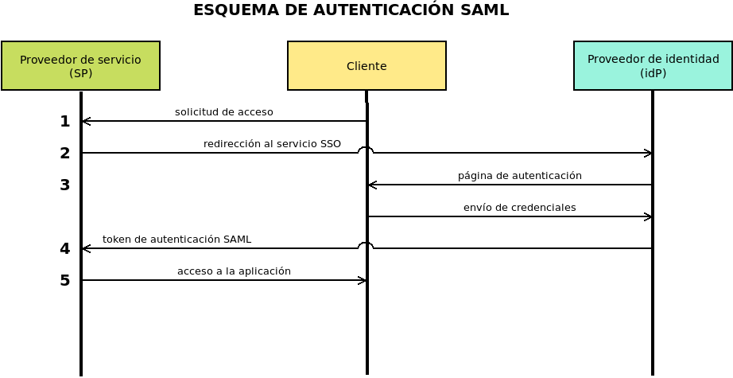

7.2.2.3.8. SimpleSAMLphp¶
SAML es un estándar basado en XML que permite intercambiar información de autenticación y autorización entre distintas fuentes. Mediante este protocolo una aplicación puede usar, para la identificación de sus clientes, un proveedor de servicio (SP) el cual consulta a su vez a uno o varios proveedores de identidad (idP). Véase este artículo para más información.
SimpleSAMLphp es una implementación libre de este estándar escrita en PHP y puede actuar, según sea nuestro interés, tanto de SP como de idP.
7.2.2.3.8.1. Instalación¶
Este epígrafe comprende la instalación y configuración básica para que la aplicación sea convenientemente servida por nginx. Dejará, pues, la aplicación funcionando, pero sin utilidad alguna, puesto que no tendrá ninguna fuente de la que obtener usuarios. Para hacerla útil será necesario configurarla de forma efectiva.
Preparado ya el servidor para procesar aplicaciones PHP[1], lo primero que debemos hacer es crear un directorio donde almacenar la aplicación y descargarla dentro de él:
# mkdir /srv/www/saml
# wget -O - 'https://simplesamlphp.org/download?latest' | tar -C /srv/www/saml --strip-component=1 -zxvf -
La aplicación visible se encuentra dentro de www/, así que ese será el
directorio que nginx tendrá que compartir. Antes, sin embargo,
preparemos mínimamente la configuración que se encuentra en
config/config.php:
$config = [
// [...]
'baseurlpath' => 'https://'.$_SERVER['SERVER_NAME'].'/saml/',
// [...]
'technicalcontact_name' => 'Administrador Todopoderoso',
'technicalcontact_email' => 'webmaster@example.org',
// [...]
'timezone' => 'Europe/Madrid',
// [...]
'secretsalt' => 'm8a4S8a5s1fE6Ph6v8zQDLjw3u1l6QWOtLt7tId95oU=',
// [...]
'auth.adminpassword' => 'contraseña.de.administrador',
// [...]
'trusted.url.domains' => [],
];
Por ahora podemos cambiar únicamente las líneas referidas:
La primera es importante configurarla en caso de que la URL externa con la que se acceda no coincida con la URL que detecta la aplicación, esto es, la URL a la que contesta el servidor web. Esta circunstancia puede darse cuando un proxy web inverso intercede y modifica el nombre de la máquina, el puerto de acceso o la ruta. Si no hay cambios en el nombre o el puerto, basta con indicar simplemente la ruta correcta:
'baseurlpath' => '/saml/',
En el ejemplo ilustrativo, el proxy cambia únicamente el puerto (se basa en un caso en que haproxy hace el cifrado TLS), por lo que, al conservarse el nombre observado por el servidor web, puede usarse el valor SERVER_NAME que proporciona éste.
Las dos siguientes líneas identifican al administrador de SimpleSAMLphp.
Opcionalmente, si el huso horario con que está configurado el servidor no coincide con el que queremos que use la aplicación, podemos cambiarlo.
La siguiente línea representa la sal que se usará cuando se generen hash. Podemos generar un buen valor con la orden sugerida en los comentarios del archivo o con esta otra orden:
$ openssl rand -base64 32 m8a4S8a5s1fE6Ph6v8zQDLjw3u1l6QWOtLt7tId95oU=
La penúltima línea es muy importante: es la contraseña que se usará para acceder a la administración de la aplicación.
La última línea enumera las máquinas que pueden hacer uso de nuestro SimpleSAMLphp. Por ejemplo, si lo hemos colocado en auth.example.org para que facilite la autenticación a una aplicación que está en www.example.org, entonces deberemos incluir esta máquina dentro de vector:
'trusted.url.domains' => [ 'www.example.org' ],
Configurada la parte de la aplicación, toca configurar nuestro nginx:
server {
listen 80;
listen 443 ssl;
server_name auth.example.org;
try_files $uri $uri/ =404;
index index.php;
include "snippets/snakeoil.conf";
if ($https != "on") {
return 301 https://$host$uri$is_args$args;
}
# Si la ruta no empieza por /saml/, se añade
rewrite ^(?!/saml/)(.*)$ /saml/$2;
location ^~ /saml {
alias /srv/www/saml/www;
location ~ \.php(?<pathinfo>/.*)?$ {
fastcgi_pass php;
include fastcgi_params;
fastcgi_param SCRIPT_FILENAME $request_filename;
fastcgi_param PATH_INFO $pathinfo if_not_empty;
fastcgi_read_timeout 300s;
}
}
}
La configuración no reviste ningún secreto, salvo el hecho de que hemos decidido colocar el servicio en la dirección https://auth.example.org/saml/. Por ese motivo, la directiva baseurlpath de la configuración de SimpleSAMLphp contenía esa ruta, y también por ello la redirección remarcada añade a la URL https://auth.example.org la ruta.
Con todo esto hecho, ya deberíamos poder acceder a la aplicación:
7.2.2.3.8.2. Configuración¶
Configurar propiamente la aplicación tiene muchas particularidades que dependen de cuál sea el propósito para el que queremos usarla. Sea como sea, hay dos casos bien diferenciados: si queremos usarlo como idP o si queremos usarlo como SP que utiliza algún idP externo.
Antes, sin embargo, es conveniente saber cómo habilitar los registros, por si
necesitamos depurar nuestras configuraciones. La aplicación los almacena dentro
del subdirectorio log, pero para que se refistren de forma efectiva es
necesario tocar dos líneas de config/config.php:
'logging.level' => SimpleSAML\Logger::DEBUG,
'logging.handler' => 'file',
Además, es bastante probable que deseemos observar la comunicación SAML:
'debug' => [
'saml' => true,
'backtraces' => true,
'validatexml' => false,
],
7.2.2.3.8.2.1. SP¶
Nuestro propósito es configurar simpleSAMLphp para que actúe como proveedor de servicio utilizando como proveedor de identidad una fuente externa como Google Workspace (antes G-Suite).
Los pasos esquemáticos que debemos seguir son dos:
Consultar los metadatos de nuestro SP a través de la pestaña de «Federación» y siempre que nos hayamos identificado como el administrador:
Los metadatos se nos facilitan en formato XML y habrá que proporcionárselos al idP según éste nos indique. El contenido de ese XML será algo parecido a esto:
<?xml version="1.0"?> <md:EntityDescriptor xmlns:md="urn:oasis:names:tc:SAML:2.0:metadata" entityID="https://auth.example.org/saml/module.php/saml/sp/metadata.php/default-sp"> <md:SPSSODescriptor protocolSupportEnumeration="urn:oasis:names:tc:SAML:2.0:protocol urn:oasis:names:tc:SAML:1.1:protocol"> <md:SingleLogoutService Binding="urn:oasis:names:tc:SAML:2.0:bindings:HTTP-Redirect" Location="https://auth.example.org/saml/module.php/saml/sp/saml2-logout.php/default-sp"/> <md:AssertionConsumerService Binding="urn:oasis:names:tc:SAML:2.0:bindings:HTTP-POST" Location="https://auth.example.org/saml/module.php/saml/sp/saml2-acs.php/default-sp" index="0"/> <md:AssertionConsumerService Binding="urn:oasis:names:tc:SAML:1.0:profiles:browser-post" Location="https://auth.example.org/saml/module.php/saml/sp/saml1-acs.php/default-sp" index="1"/> <md:AssertionConsumerService Binding="urn:oasis:names:tc:SAML:2.0:bindings:HTTP-Artifact" Location="https://auth.example.org/saml/module.php/saml/sp/saml2-acs.php/default-sp" index="2"/> <md:AssertionConsumerService Binding="urn:oasis:names:tc:SAML:1.0:profiles:artifact-01" Location="https://auth.example.org/saml/module.php/saml/sp/saml1-acs.php/default-sp/artifact" index="3"/> </md:SPSSODescriptor> <md:ContactPerson contactType="technical"> <md:GivenName>Administrador</md:GivenName> <md:SurName>Todopoderoso</md:SurName> <md:EmailAddress>mailto:webmaster@example.org</md:EmailAddress> </md:ContactPerson> </md:EntityDescriptor>
Obtener los metadatos proporcionados por el idP para introducirlos en
metadata/saml20-idp-remote.php.Lo más probable es que el idP nos facilite sus metadatos también en formato XML y tengamos que generar nosotros el código PHP para añadirlo al archivo
saml20-idp-remote.php. No obstante, simpleSAMLphp tiene un conversor que nos hace el trabajo también en la pestaña de «Federación»:Por tanto, basta con usar ese conversor con el el XML del idP para obtener el código PHP que debemos añadir a
metadata/saml20-idp-remote.php.
Cómo configurarlo para Google Workspace.
La concreción de los dos pasos anteriores para Google Workspace es la siguiente:
Obtener el XML de metadatos de nuestro SP según lo indicado en el paso 1.
Entrar en la página de administración de Google Workspace y visitar la sección Aplicaciones>Aplicaciones web y móviles.
Añadir una aplicación SAML personalizada. Durante este proceso:
Se nos permitirá descargar el XML de metadatos de Google como idP, que es el que debemos usar en el segundo paso explicado anteriormente para generar el código para
saml20-idp-remote.php.Se nos pedirán dos datos de nuestro SP, que podremos consultar en el XML obtenido en el primer paso[2]:
El identificador de la entidad (dado por el atributo entityID del elemento EntityDescriptor).
La URL ACS que se encuentra en el atributio Location del elemento AssertionConsumerService. Debe tomarse la URL para la versión 2 de SAML (p.e. el elemento cuyo atributo index es 0).
Mapearemos los datos que queremos facilitar. Lo más habitual es el nombre (First name) el apellido (Last name) y la dirección de correo electrónico (Primary email).
Una vez añadida la aplicación, editarla para configurar el acceso de los usuarios. En principio, se les niega a todos, pero podemos permitir su uso por unidades organizativas:
Entrar en la página de administración de SimpleSAMLphp y, según se indicó en el paso esquemático 2, generar el código PHP a partir del XML de metadatos facilitado por Google.
Copiar el código en
metadata/saml20-idp-remote.php.
Y ¡listo! Ahora deberíamos poder usar Google para autenticarnos. Podemos hacer la prueba a través de la propia página de administración:
Si tenemos algún problema o alguna duda, estas son algunas fuentes que puede ayudarnos:
7.2.2.3.8.2.2. idP¶
Notas al pie